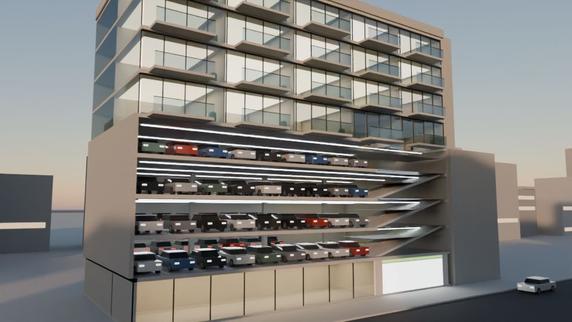

Parkstory › Guides
EV charging in an automated garage
In a conventional garage, a fully charged car blocks the charger until its driver returns. An automated garage can move the car away.
Every TilePark pallet is EV-ready: drivers plug their own cable into the socket on the pallet and start charging from the app. TilePark moves the car to a charging point, charges it to the level requested and then moves it away, so the next car can charge. Fewer charging points serve more cars, charging power is managed across the whole system, and capacity can grow with demand.

How it works
- The driver parks in the transfer cabin, plugs the cable into the socket on the pallet and chooses the charge level in the app.
- The system moves the car to a charging point and charges it.
- When the car reaches the requested level, it is moved away and the charging point is free for the next car.
- Charging is metered live in the app and paid in the same app; automated re-parking means no idle fees.
Why fewer charging points serve more cars
A fixed charging bay is blocked by a full car until its driver returns. Because TilePark moves charged cars away, its charging points stay in use through the night. The overnight simulation on our website shows the effect for one charging point over a working day.
What is defined for each project
- Number of charging points and the charging power per point
- Connector type for the market
- Connection to the building’s electrical supply and the load-management limits
- Metering, billing and the operator’s pricing
- Room to add capacity later as demand grows
Questions on this topic
Do drivers need their own cable?
Yes. Drivers plug their own cable into the socket on the pallet.
How many charging points do we need?
That depends on how many EVs park in the building and how much they need to charge. The feasibility study sizes the charging points and the electrical connection for your project.
Can charging capacity grow later?
Yes. Charging capacity can grow with demand without rebuilding the garage.
Get the figures for your site
Send us your site or floor plan. Our engineers lay out TilePark on your site free of charge.
Request a free feasibility study →